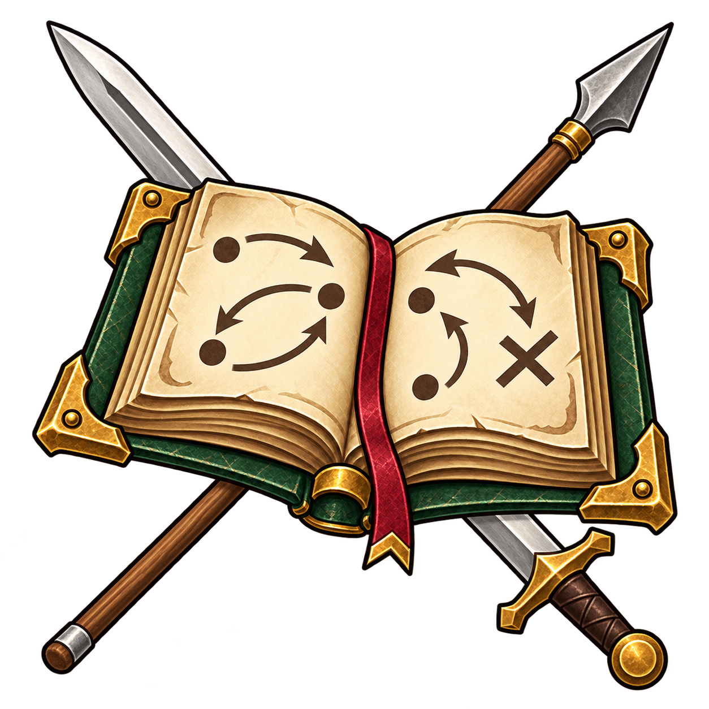

Aleria · CharakterkundeDas Handbuch
Das Handbuch
für dein nächstes Duell.
Techniken, Waffen und Gefährten im Zusammenspiel. Finde einen Charakter und erkunde sein Arsenal – vom ersten Trefferwurf bis zum vorbereiteten Konter.

3 Charakter-Guides

Cenyr › Celtigerns Wacht › Haus Bleiddorn / Wolfshorn
Grenzerin · Skytte · Stufe 7Lady Ylva Bleiddorn / Wolfshorn
Speerführung zwischen Jagd und Grenzwacht
Guide öffnen
Cenyr › Celtigerns Wacht › Haus Wyrm
Ritter · Uchelwyr · Stufe 5Sir Gais Wyrm
Lanzenführung, Deckung und vorbereitete Konter
Guide öffnen
Cenyr › Celtigerns Wacht › Haus Draig
Ritter · Teulu · Stufe 5Sir Gawain Draig
Schwertfolgen, Silberschuppe und die richtige Antwort
Guide öffnenKein Guide entspricht dieser Auswahl.